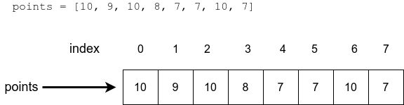
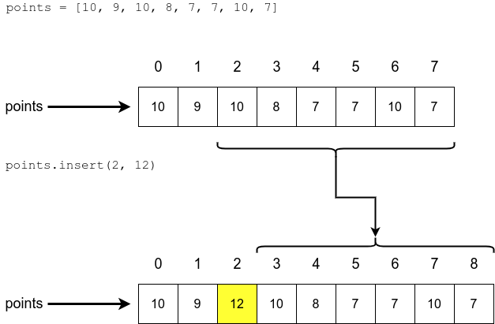

Thus far in our programs we have stored data with variables, each bit of data usually having its own named variable. This obviously has some limitations, as it can get cumbersome to define separate variables for everything when there is a lot of data to handle.
A Python list is a collection of values which is accessed via a single variable name. The contents of the list are written within square brackets. The values contained in the list are called items, or sometimes elements.
The following command creates a new, empty list
my_list = []
whereas this command creates a list with five items in it:
my_list = [7, 2, 2, 5, 2]
The items in a list are indexed in exactly the same way as characters in a string. Indexing starts from zero, and the last index is the length of the list minus 1:

A single list item can be accessed just like a single character in a string is accessed, with square brackets:
my_list = [7, 2, 2, 5, 2]
print(my_list[0])
print(my_list[1])
print(my_list[3])
print("The sum of the first two items:", my_list[0] + my_list[1])
The entire contents of the list can also be printed out:
my_list = [7, 2, 2, 5, 2]
print(my_list)
Unlike strings, lists are mutable, which means their contents can change. You can assign a new value to an item within a list, just like you can assign a new value to a variable:
my_list = [7, 2, 2, 5, 2]
print(my_list)
my_list[1] = 3
print(my_list)
The function len gives you the number of items in a list:
my_list = [7, 2, 2, 5, 2]
print(len(my_list))
The append method adds items to the end of a list. It works like this:
numbers = []
numbers.append(5)
numbers.append(10)
numbers.append(3)
print(numbers)
The following example makes use of two separate lists:
numbers = []
shoe_sizes = []
numbers.append(5)
numbers.append(10)
numbers.append(3)
shoe_sizes.append(37)
shoe_sizes.append(44)
shoe_sizes.append(40)
shoe_sizes.append(28)
print("Numbers:")
print(numbers)
print("Shoe sizes:")
print(shoe_sizes)
The item is appended to the list on which the method is called:
If you want to specify a location in the list where an item should be added, you can use the insert method. The method adds an item at the specified index. All the items already in the list with an index equal to or higher than the specified index are moved one index further, “to the right”:

So, for instance this program
numbers = [1, 2, 3, 4, 5, 6]
numbers.insert(0, 10)
print(numbers)
numbers.insert(2, 20)
print(numbers)
prints out this:
There are two different approaches to removing an item from a list:
pop.remove.So, the method pop takes the index of the item you want to remove as its argument. The following program removes items at indexes 2 and 3 from the list. Notice how the indexes of the remaining items change when one is removed.
my_list = [1, 2, 3, 4, 5, 6]
my_list.pop(2)
print(my_list)
my_list.pop(3)
print(my_list)
It’s useful to remember that the method pop also returns the removed item:
my_list = [4, 2, 7, 2, 5]
number = my_list.pop(2)
print(number)
print(my_list)
The method remove, on the other hand, takes the value of the item to be removed as its argument. For example, this program
my_list = [1, 2, 3, 4, 5, 6]
my_list.remove(2)
print(my_list)
my_list.remove(5)
print(my_list)
prints out this:
The method removes the first occurrence of the value in the list, much like the string function find returns the first occurrence of a substring:
my_list = [1, 2, 1, 2]
my_list.remove(1)
print(my_list)
my_list.remove(1)
print(my_list)
If the specified item is not in the list, the remove function causes an error. Just like with strings, we can check for the presence of an item with the in operator:
my_list = [1, 3, 4]
if 1 in my_list:
print("The list contains item 1")
if 2 in my_list:
print("The list contains item 2")
The items in a list can be sorted from smallest to greatest with the method sort.
my_list = [2,5,1,2,4]
my_list.sort()
print(my_list)
Notice how the method modifies the list itself. Sometimes we don’t want to change the original list, so we use the function sorted instead. It returns a sorted list:
my_list = [2,5,1,2,4]
print(sorted(my_list)))
Remember the difference between the two: sort changes the order of the original list in place, whereas sorted creates a new, ordered copy of the list. With sorted we can preserve the original order of the list:
original = [2, 5, 1, 2, 4]
in_order = sorted(original)
print(original)
print(in_order)
The functions max and min, short for maximum and minimum, return the greatest and smallest item in a list, respectively. The function sum returns the sum of all items in a list.
my_list = [5, 2, 3, 1, 4]
greatest = max(my_list)
smallest = min(my_list)
list_sum = sum(my_list)
print("Smallest:", smallest)
print("Greatest:", greatest)
print("Sum:", list_sum)
There are two different ways of processing lists in Python, which can get confusing. For the most part you will use list methods, such as append and sort. They are used with the dot . operator on the list variable:
my_list = []
# method calls
my_list.append(3)
my_list.append(1)
my_list.append(7)
my_list.append(2)
# another method call
my_list.sort()
Some functions are happy to take a list as an argument. Above we saw the functions max, min, len and sorted do just that:
my_list = [3, 2, 7, 1]
# function calls take the list as an argument
greatest = max(my_list)
smallest = min(my_list)
length = len(my_list)
print("Smallest:", smallest)
print("Greatest:", greatest)
print("Length of the list:", length)
# another function call
# the list itself is an argument, the function returns a sorted copy
in_order = sorted(my_list)
print(in_order)
Just like the built-in functions above, our own functions can also take a list as an argument and produce a list as a return value. The following function works out the central value in an ordered list, also called the median value:
def median(my_list: list):
ordered = sorted(my_list))
list_centre = len(ordered) // 2
return ordered[list_centre]
The function creates an ordered version of the list given as an argument and returns the item in the very middle. Notice the integer division operator // used here. The index of a list should always be an integer.
The function works like this:
shoe_sizes = [45, 44, 36, 39, 40]
print("The median of the shoe sizes is", median(shoe_sizes))
ages = [1, 56, 34, 22, 5, 77, 5]
print("The median of the ages is", median(ages))
A function can also return a list. The following function asks the user to type in integers and returns the input as a list:
def input_numbers():
numbers = []
while True:
user_input = input("Please type in an integer, leave empty to exit: ")
if len(user_input) == 0:
break
numbers.append(int(user_input))
return numbers
The function makes use of a helper variable numbers, which is a list. All the numbers typed in by the user are added to the list. When the loop is exited from, the function returns the list with the statement return numbers.
Calling the function like this
numbers = input_numbers()
print("The greatest number is", max(numbers))
print("The median of the numbers is", median(numbers))
could print this, for example:
This small example demonstrates one of the most important uses of functions: they can help you divide your code into smaller, easily understandable and logical wholes.
Of course the same functionality could be achieved without writing any of our own functions:
numbers = []
while True:
user_input = input("Please type in an integer, leave empty to exit: ")
if len(user_input) == 0:
break
numbers.append(int(user_input))
ordered = sorted(numbers)
list_centre = len(ordered) // 2
median = ordered[list_centre]
print("The greatest number is", max(numbers))
print("The median of the numbers is", median)
In this version, following the programming logic is more difficult, as it is no longer clear which commands are a part of which functionality. The code fulfils the same purposes - reading in input, calculating the median value, and so on - but the structure is less clear.
Organising your code into separate functions will improve you program’s readability, but also make it easier to handle logical wholes. This in turn helps you verify that the program works as intended, as each function can be tested separately.
Another important use for functions is making code reusable. If you need to achieve some functionality multiple times in your program, it is a good idea to create your own function and name it appropriately:
print("Shoe sizes:")
shoe_sizes = input_numbers()
print("Weights:")
weights = input_numbers()
print("Heights:")
heights = input_numbers()
There are many more ways to use lists in Python. The Python documentation is a good place to start if you want to know more.